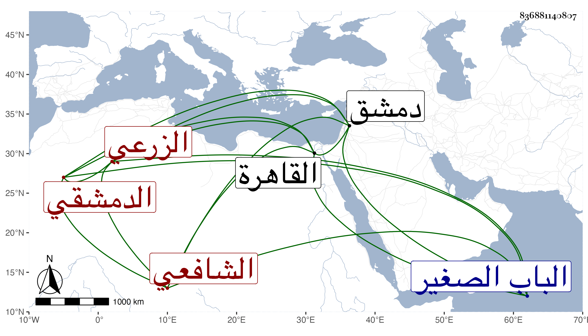

0902Sakhawi.DawLamic.ITO20230111-ara1.EIS1600.836881140807
Biography ID: 836881140807
881
محمد بن إبراهيم بن عبد الرحمن بن محمد بن محمد بن شرف بن منصور ابن محمود بن توفيق بن محمد بن عبد الله المحب أبو الفضل بن البرهان أبي إسحاق ابن الزين الزرعي الأصل الدمشقي الشافعي الماضي أبوه ويعرف كسلفه بابن قاضي عجلون ، وأجاز له البرهان الحلبي وابن خطيب الناصرية وأبو جعفر بن الضياء وآخرون ، وناب عن الباعوني فمن بعده ولكنه ترفع عن من بعد الخيضري ، نعم ناب في الخطابة بالجامع الأموي عن الشهاب بن الفرفور مسئولا في ذلك ودرس بالظاهرية الجوانية وبالعذراوية ثم رغب عنهما لابن المعتمد ، وكان حسن الشكالة والعبارة والأداء والخطابة بل قيل إنه جمع ديوانا ، وقدم القاهرة مرارا آخرها في سنة سبع وثمانين وبذل مالا ثم رجع . ومات في ثاني عشر ربيع الأول سنة إحدى وتسعين بدمشق ودفن بمقبرة الباب الصغير عند أسلافه وكانت جنازته حافلة .
